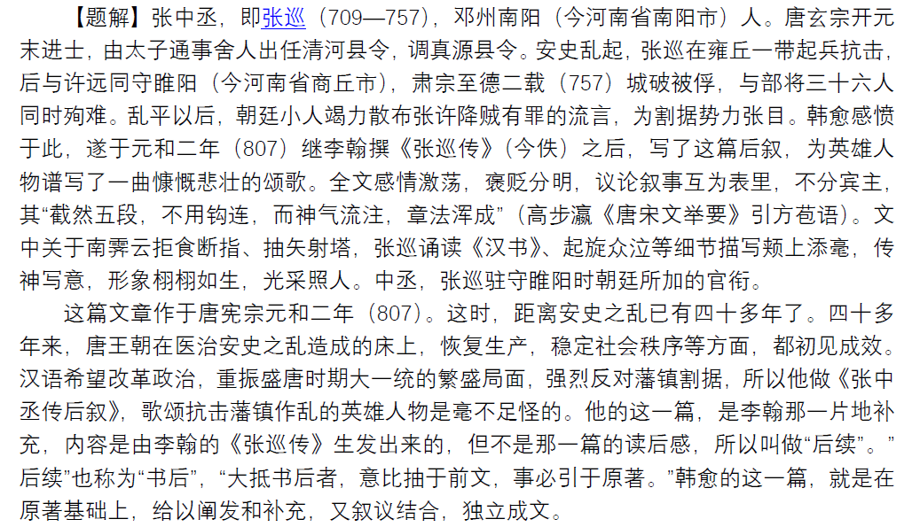

男儿死耳，不可为不义屈！
BOOK REVIEW
但写真情与实境，任他埋没与流传
——《张中丞传后叙》之浅见
真实是一切文学学术作品的生命。《张中丞传后叙》写作上的第一个特色，就是写出了事实的本来面目，它是用事实说话，因而格外有力。 文章开头一段，犹如全文序言，说明本文写作的原因和意图，交代非常具体，说话又似乎是非常随便的，只是直接写事实的，全不虚张声扬。 这段不过是交代性的笔墨，与全文中心思想并无直接关系，但让事实说话的基调已经定位。第二段之后，文章逐步展开，无论是叙是议全都有一说一，有二说二。 批驳谬论，全用事实为根据；叙述事实，有多少说多少，并且指明材料来源，这就使全文坐实在用可靠的事实砌成的牢固基础之上，不由读者不信服，也不容论敌置喙挑剔。

这三个段落是承开头“不为许远立传”一句而发，是立足于许远抗敌赴难而 终于为国捐躯的事实，既批驳种种谬论， 又表彰许远中直磊落的行为品质和阻遏敌势、蔽遮江淮的功勋。每一段驳一种谬论： 二段驳斥“以为巡死而远就掳，疑畏死而辞服于贼”，三段驳“城之陷，自远所分始”，四段驳“责二公以死守“的中伤。二段是关键，为许远洗清”辞服于敌“的冤枉，其余种种污蔑就好办了。
为此，作者一一摆出在紧要关头许远的表现，大概有以下几件：一、”开门纳巡，……授之以柄而处其下，无所疑忌，竟与巡俱守死“。许远的中直磊落，不言自明。 二、”城陷而疑忌，与巡先后异耳“。说明许远和张巡一样，是为抗敌救国而壮烈牺牲的。三、“外无待而由死守，人相食而尽，虽愚人亦能数日而知死处矣”。
三段所驳不过是貌似事实，实际不过是迷人眼目的“儿童之见”，不值一驳，却又非要戳穿不可。 作者侧面迂回战斗，举出日常生活中极其普通的事例，“人之将死，其肺腑必有先受其病者；引绳而绝之，其绝必有处”，这是每一个正常人都能理解的， 作者不再多说，读者头脑中，自然而然得认识到：“守一城，捍天下，以千百就尽之卒，战百万日滋之师”，而且是“外无蝼蚁之援”，城陷是必然结果，许远有什么责任？ 戳穿了谬论的欺骗性，也就露出了论敌的卑鄙丑陋的面目：“小人之好议论，不乐成人之美，如是哉”，这也是一种事实。 指出正反两面的事实加以对照，并在事实的基础上做极易为人明白的和接受的推论，从而对敌人反戈一击，制敌于死命。

其次，我们来谈本文结构和写法上的灵活变化。作为一篇“后叙”，对于李翰的《张巡传》，只能补齐不足，而不能做完整系统的叙述。 《张巡传》我们是看不到了，难于把它和本文加以比较，但读韩愈的这“后叙”，似乎是忘记了作文的起承转合和勾连呼应，足见他是严格避免与《张巡传》发生重复。 这篇文章涉及内容多而杂，有种中谬说的批驳， 有对英雄事迹的描述，前后写了许远、南霁云和张巡三个人物，又是使用了各不相同的笔墨，真是加叙加议，虚实结合，波澜变化，感人至深。
先看写许远。大概由他的性格所决定，在他的行为中缺少叱诧风云的事例，死后所遭受的诽谤最深最重，所以韩愈写许远，重点放在辩诬。 于批驳种种诬陷的时候。列举他许远的主要事迹和功勋作为论据，许远的所作所为与谬论尖锐对立，许远的忠勇磊落与卑劣丑恶形成鲜明的对比， 一个是巍然耸立的高山，一个不过是山脚下的一坯黄土。作者不着力刻画描绘，而许远的性格品质，依然是清楚的。对于许远等人的诽谤有着深刻的社会根源， 辩诬绝不是容易的，所以韩愈足足用了三段文字来进行分析，他极善于抓住论敌的要害，针锋相对地举出正面事实， 事实胜于雄辩，先给对方造成威慑。然后做入情入理的推论和发挥，进而逼近论敌。说事实，讲道理，最后到关键之处，以集中的，打中敌人的要害。
李翰的《张巡记》叙张巡事迹已“颇详密”，所以关于张巡只补充一些生活琐事，使得张巡的形象更加生动饱满，有血有肉。博学强记、文思敏捷、关怀士卒的张巡， 与智勇双全、指挥若定、视死如归的张巡， 正是一个完整性格的几个侧面。作为一个严肃的作家，韩愈自觉不自觉地遵循着现实主义的创作方法，丝毫没有把生活和人物简单化。